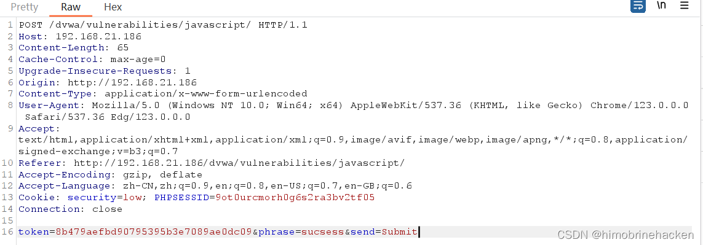
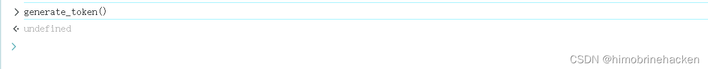
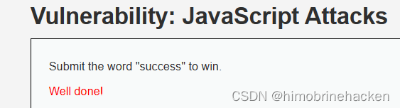
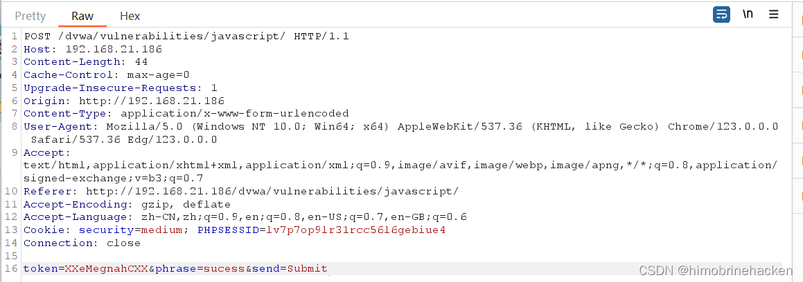
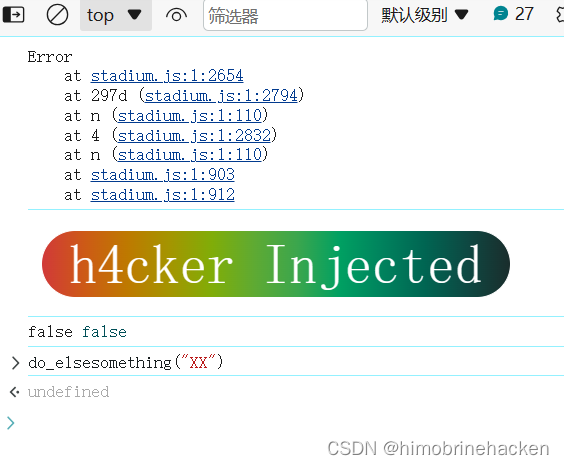
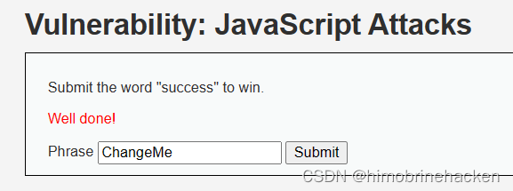
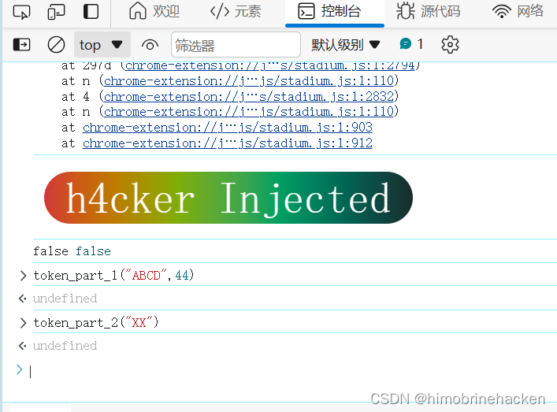
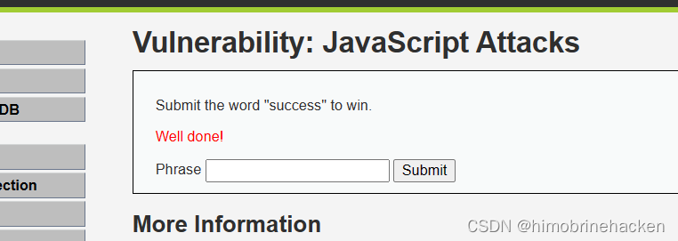
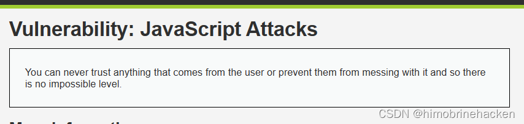

JS 简介
JavaScript 是一种解释型语言（代码不需要编译），一般镶嵌在 HTML 或者 PHP 中实现。JavaScript Attacks 模块旨在让学习者理解前端 JS 代码中可能存在的安全隐患，通过分析 JS 加密逻辑并手动构造正确的 token 来绕过前端校验。
Low 难度
代码分析
<?php
$page[ 'body' ] .= <<<EOF
<script>
function rot13(inp) {
return inp.replace(/[a-zA-Z]/g,function(c){
return String.fromCharCode((c<="Z"?90:122)>=(c=c.charCodeAt(0)+13)?c:c-26);
});
}
function generate_token() {
var phrase = document.getElementById("phrase").value;
document.getElementById("token").value = md5(rot13(phrase));
}
generate_token();
</script>
EOF;
?>利用 MD5 加密生成 token，generate_token() 函数获取 phrase 参数的值，将其进行 ROT13 加密后再进行 MD5 哈希作为 token。
漏洞利用
抓包观察请求：

由于 token 是基于 phrase 参数计算得到的，只需要本地计算正确的 token 并覆盖原有参数即可提交：


Medium 难度
代码分析
medium.php:
<script src="vulnerabilities/javascript/source/medium.js"></script>medium.js:
function do_something(e) {
for(var t="", n=e.length-1; n>=0; n--)
t += e[n];
return t;
}
setTimeout(function(){ do_elsesomething("XX") }, 300);
function do_elsesomething(e) {
document.getElementById("token").value =
do_something(e + document.getElementById("phrase").value + "XX");
}将 phrase 的值逆序排列，生成的 token = XX + reverse(phrase) + XX。
漏洞利用
抓包观察请求参数：

和 Low 级别一样，本地计算反转后的 token 值提交即可绕过：


High 难度
代码分析
high.php:
<script src="vulnerabilities/javascript/source/high.js"></script>high.js 中的代码经过了混淆，但核心逻辑可以通过分析得出。关键函数如下：
function do_something(e) {
for(var t="", n=e.length-1; n>=0; n--)
t += e[n];
return t;
}
function token_part_1(a, b) {
document.getElementById("token").value =
do_something(document.getElementById("phrase").value);
}
function token_part_2(t, y="ZZ") {
document.getElementById("token").value =
do_something(document.getElementById("token").value + y);
}
function token_part_3(e="YY") {
document.getElementById("token").value =
do_something(e + document.getElementById("token").value);
}
function token_part_1(a, b) {
document.getElementById("token").value =
do_something(document.getElementById("phrase").value);
}
document.getElementById("phrase").value = "";
setTimeout(function(){ token_part_2("XX") }, 300);
document.getElementById("send").addEventListener("click", token_part_3);
token_part_1("ABCD", 44);执行顺序：首先执行 token_part_1("ABCD", 44) 对 phrase 进行反转，300ms 后执行 token_part_2("XX") 拼接 "XX" 并再次反转，点击提交时执行 token_part_3 拼接 "YY" 在前端并反转。
漏洞利用
在控制台中逐步执行各函数，观察 token 变化：

按照代码中的顺序依次调用 token_part_1、token_part_2、token_part_3 获取最终 token 后提交：

Impossible 难度
代码分析

Impossible 级别在前端几乎没有任何可用的 JS 代码，验证逻辑完全在服务端完成。因此无法通过前端分析 token 生成算法来绕过，体现了正确的安全设计原则：前端只负责展示，所有关键校验应在服务端执行。